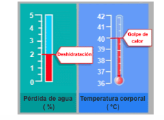
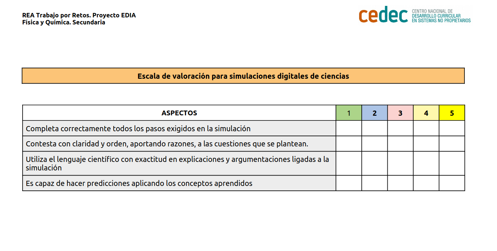

Correr en días de calor: ítem de PISA
Todos los seres humanos mantenemos nuestra temperatura constante dentro de uno límites estrechos. Aguantamos temperaturas inferiores a 35ºC y superiores a 41ºC pero en periodos cortos de tiempo ya que desviaciones prolongadas fuera de estos limites pueden provocar alteraciones graves en el organismo e incluso la muerte.
Nuestro cuerpo para mantener constante la temperatura ha desarrollado una serie de mecanismos fisiológicos con los que conservar, eliminar o producir el calor corporal

Pero ¿Qué mecanismo utiliza nuestro cuerpo cuando realizamos grandes esfuerzos en días de mucho calor? Vamos a investigar mediante un ítem de Pisa ¿Qué sucede cuando corremos en días de calor?¿Cómo reacciona nuestro cuerpo?
Ítem extraído de: Ciencias en PISA, pruebas liberada. Instituto de Evaluación. Ministerio de Educación. 2015.
Correr en días de calor
- Duración:
- Una sesión
- Agrupamiento:
- Individual, pequeño y gran grupo
En esta tarea vamos investigar un experimento científico relacionado con la termorregulación. Investigaremos el efecto de la temperatura, de la humedad del aire en los corredores de larga distancia, así como los posibles cambios si beben agua o no. Investigaremos el efecto del volumen de sudor, de la pérdida de agua y la temperatura corporal, los riesgos para la salud, en condiciones de posible deshidratación o golpe de calor.
Para ello utilizaremos un ítem de Pisa que nos da la opción de utilizar una simulación. Realizaremos las actividades individualmente y cotejaremos las respuestas en el grupo, y finalmente realizaremos un debate con las conclusiones obtenidas, entre todos los grupos de la clase.
¡Empecemos a investigar !
Características de nuestra investigación
En nuestra investigación realizaremos cinco actividades, que en un principio haremos sin simulación y posteriormente comprobaremos con la simulación, finalmente realizamos una quinta actividad para debatir nuestras respuestas y conclusiones.
Información inicial: Correr en días de calor
Al correr largas distancias, la temperatura corporal aumenta y se suda.
Si los corredores no beben lo suficiente para reponer el agua que pierden a través del sudor, pueden experimentar deshidratación. Una pérdida de agua del 2% o más de la masa corporal se considera estado de deshidratación. Este porcentaje está señalado en el medidor de pérdida de agua que se ve a continuación.
Si la temperatura corporal aumenta hasta los 40ºC o más, los corredores pueden sufrir un trastorno llamado golpe de calor que puede causar la muerte. Esta temperatura está señalada en el termómetro de temperatura corporal que se muestra a continuación.

Actividad 1
Actividad 2
Actividad 3
Actividad 4
Actividad 5
Actividad 6: Conclusión y debate
Una vez acabada la actividad, cotejamos las respuestas y las comprobamos con la simulación y realizamos un debate.
Para realizar el debate tendremos en cuenta las siguientes preguntas, primero las pesamos en el grupo pequeño y luego las debatimos en el grupo de clase.
En las actividades 4 y 5 explica cómo corroboran tus respuestas los datos que aparecen en las sugerencias:
- Actividad 4:
- Actividad 5:
Una vez finalizada la actividad, hacemos un pequeño debate en clase con estas cuestiones. Primero las pensamos individualmente:
- He contestado todas las preguntas
- Donde he tenido mas dificultad y ¿por qué?
- He entendido todos los textos
- He comprendido el significado de utilizar diferentes materiales para contribuir al ahorro de energía.
- Entiendo la relación entre consumo de energía y emisiones de gases contaminantes a la atmósfera.
Evaluación y reflexión
Una vez que hemos finalizado la tarea, es un buen momento para reflexionar en nuestro diario de aprendizaje. Algunas sugerencias pueden ser:
- ¿Qué he aprendido?
- ¿Qué me ha sorprendido más de todo el proceso? ¿Por qué?
- ¿He cambiado alguna idea previa? ¿Cuál?
- ¿Qué me ha resultado más difícil? ¿Por qué?
Evaluación
1.-La tarea se evalúa con la siguiente escala genérica de evaluación de debates sobre ciencias (descargar en formato editable odt y en pdf):
.png)
2.-Para evaluar emplearemos la siguiente escala: Escala de valoración para simulaciones digitales de ciencias ( descarga en formato editable odt y en pdf ):
